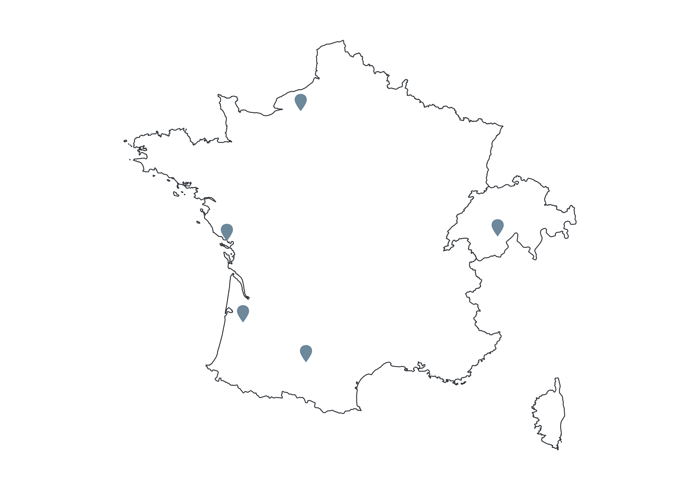

Présentation des projets multirisques
›Comprendre le risque et le multirisque
›Exemples d'évènements multirisque
›Prévention du multirisque
›Les risques naturels occupent en France une large partie du territoire : environ deux tiers des 36 000 communes sont exposées à au moins un risque, voire à plusieurs dans certains contextes géographiques. Dans les Alpes, la FFCAM (Fédération française des clubs alpins et de montagne) recense au moins deux aléas par collectivité, et le CYPRES quatre dans le département du Var (Centre d'information pour la prévention des risques majeurs). Le croisement de ces aléas sur un même territoire, renforcé par l’influence du changement climatique et l'urbanisation croissante de zones exposées au risque, tend à complexifier les événements extrêmes et leur gestion. Outre l'augmentation de l'intensité et de la fréquence de certains phénomènes météorologiques (précipitations, variabilité des températures intra-saisonnière), aléas et enjeux deviennent interdépendants et peuvent engendrer des évènements dits "multirisques".
Le renforcement de la préparation des populations apparaît dès lors comme un levier essentiel pour faire face à ces situations exceptionnelles et permettre aux territoires d'améliorer leur résilience. C’est dans cette perspective que s’inscrit le projet de recherche MIRIADE. Lancé en 2023 par l’UMR RECOVER (INRAE PACA), l’UMR CEREGE et le LIEU (Aix-Marseille Université), et financé par l’initiative d’excellence A*MIDEX, celui-ci vise à développer une démarche et un outil de représentation graphique et cartographique de scénarios multirisques pour l’aide à la décision et la communication vers le grand public.
Découvrir des événements multirisques récents sur le territoire
Cette carte vous invite à découvrir plusieurs évènements multirisques marquants survenus en France
et à travers le monde. Chaque évènement est accompagné d'une fiche descriptive présentant son
contexte, les aléas en jeu, le déroulement de la crise ainsi que ses principaux impacts sur les
territoires concernés.
Explorez ces exemples pour mieux comprendre comment plusieurs phénomènes naturels peuvent se
combiner ou se succéder et amplifier leurs conséquences.
N'hésitez pas ensuite à consulter la géovisualisation interactive des scénarios
multirisques afin d'approfondir votre compréhension des mécanismes du multirisque et
d'explorer différents scénarios de manière interactive.

Des questions ? Des suggestions ? Vous souhaitez en savoir plus sur le multirisque ?